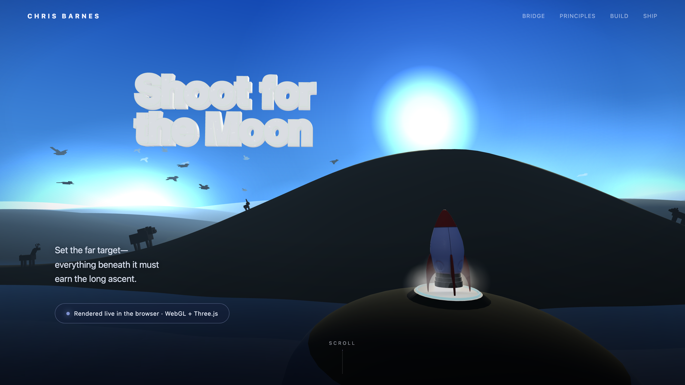
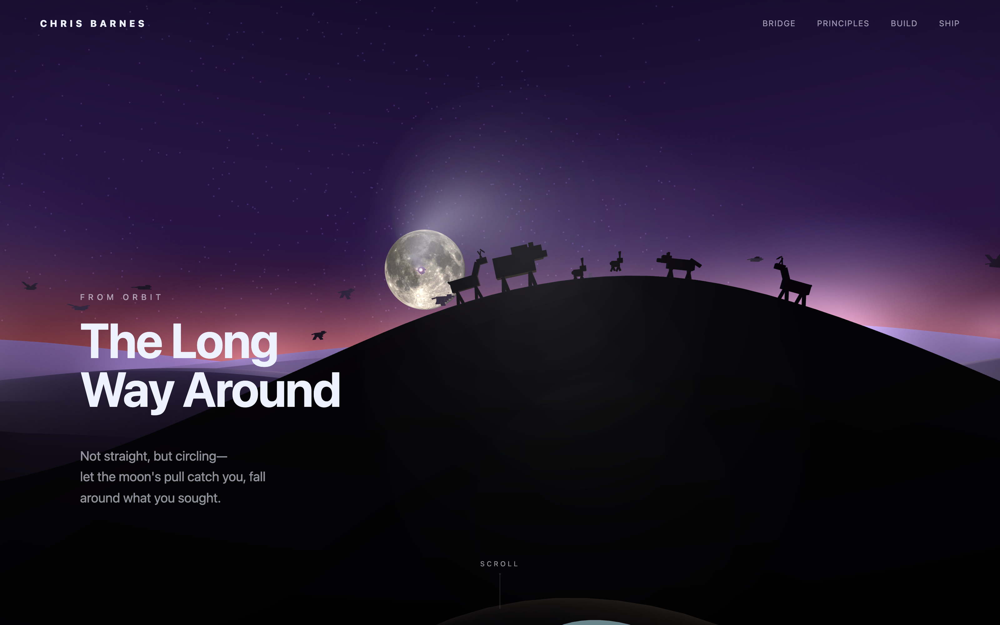
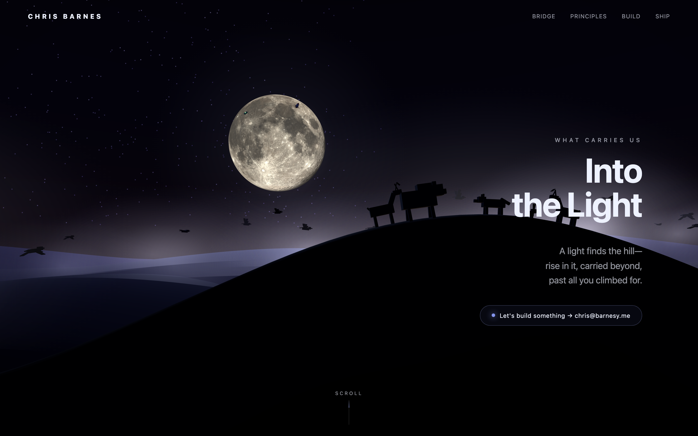

That was the whole experiment. I sat down with Claude to see how much I could wring out of real-time 3D in a plain browser tab — and it turned into Shoot for the Moon: one continuous, scroll-driven shot from a morning rocket launch to a moonlit landing. No video, no game engine, no build step. A single HTML file, Three.js, and a lot of fast back-and-forth.
Open the live demo →
Where it starts. The headline is real extruded 3D geometry — soft, rounded, glitter-flecked — sitting in the same scene as the rocket.
I didn't start with a storyboard. I started with a question: how much real-time 3D can you get out of a browser in an afternoon if you treat Claude as a pair, not a code vending machine? One self-imposed rule — keep it to a single HTML file, no build step, so the whole thing stays legible and loads instantly.
The other rule was about control: no buttons, no UI. The scrollbar would be the only input. That constraint did something nice — it forced every idea to become a moment on a single timeline. Launch, orbit, dusk, moonrise, landing: each one is just a position on the page. Scroll down and time moves forward; scroll up and the rocket flies home.


Three.js, one HTML file, no build step. The sky gradient, the gibbous moon, the UFO's tractor beam, and the reflective sea are each a small custom GLSL shader. The rocket and saucer are OBJ models; everything else — hills, animals, birds — is built from boxes and displaced planes so it stays light.
The headline is real 3D type: extruded geometry with soft, rounded "space-pillow" bevels, lit on its own render layer so it stays bright white, with a seamless-looping glitter video driving its emissive channel so it twinkles. It zooms past the camera to get out of the way the moment you start scrolling.
The fussy parts were the ones you don't notice — and where most of the afternoon actually went. Making the rocket descend along a great-circle arc so it never clips through the moon. Draping the beam's "laser" ring exactly where the light cone meets the hillside. Refitting the title against the live camera projection so it never clips on a phone. The seams were the work.
Pair-coded with Claude, end to end. Source on GitHub →
Mostly: the ceiling is higher than I expected, and the bottleneck isn't the rendering anymore — it's taste and iteration speed. With Claude handling the math and the boilerplate, an afternoon was enough to chase a hundred small "what if we…" ideas, keep the ten that landed, and throw the rest away. That loop — try it, look at it, adjust — is the whole game now, and it's gotten fast.